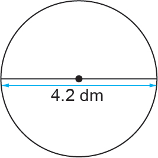

Example 3
Find the circumference of a circle whose diameter is 4.2 dm.
Solution

4.2 dm
Therefore, the circumference of the circle is 13.2 dm.
Example 4
Find the diameter of a circle whose circumference is 110 cm.
Solution
Divide both sides by to make the subject,
Thus,
Therefore, the diameter of the circle is 35 cm.